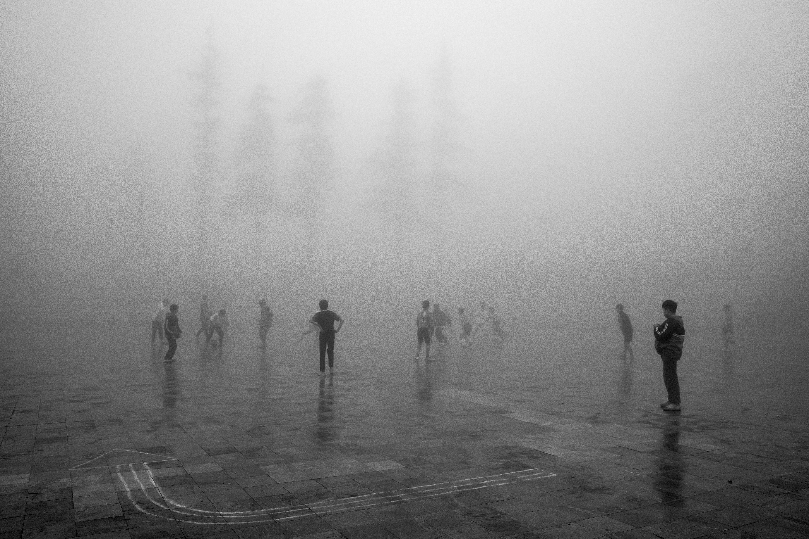
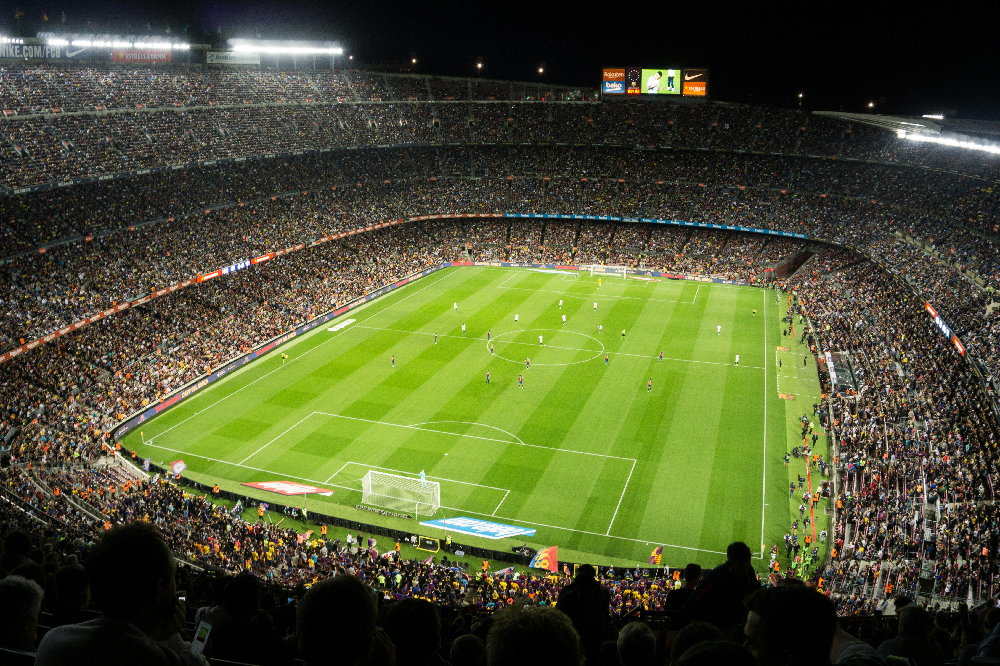
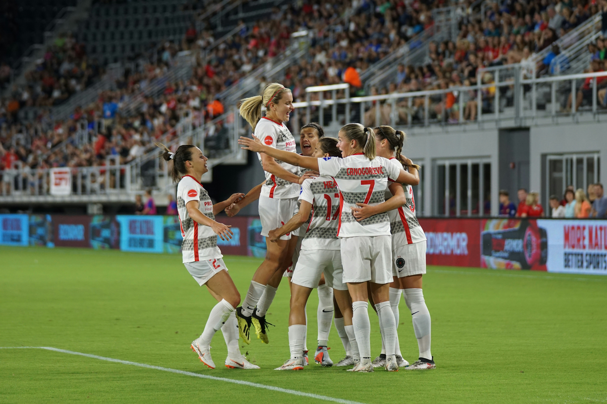

What Is Soccer?
Soccer — known as football in most of the world — is the most popular sport on the planet, played by over 250 million people across more than 200 countries. The game is simple at its core: two teams of eleven players attempt to score by getting a ball into the opposing team's goal, using any part of the body except the arms and hands (goalkeepers aside). Yet within that simplicity lies an almost infinite depth of skill, strategy, and teamwork.
A standard match consists of two 45-minute halves played on a rectangular grass or artificial turf field. Teams earn three points for a win, one for a draw, and none for a loss in most league formats. From local parks to sold-out stadiums holding 100,000 fans, soccer transcends culture, language, and borders like no other sport.

Image source: Unsplash.com — free to use under the Unsplash License.
| Fact | Detail |
|---|---|
| Players per team | 11 (including goalkeeper) |
| Match duration | 90 minutes (two 45-min halves) |
| Governing body | FIFA (Fédération Internationale de Football Association) |
| Ball circumference | 68–70 cm (size 5, professional) |
| Field dimensions | 100–110 m × 64–75 m |
| Global players | ~265 million registered players |
Who Plays Soccer?
Soccer is truly universal — played and watched by people of every age, gender, and background. At the professional level, leagues like the English Premier League, La Liga, Serie A, and MLS attract billions of viewers worldwide. Legends like Pelé, Diego Maradona, Lionel Messi, and Cristiano Ronaldo have become global cultural icons, inspiring entire generations to pick up the sport.

Image source: Unsplash.com — free to use under the Unsplash License.
Beyond professionals, soccer is played by millions of amateurs in recreational leagues, school teams, and pickup games in streets and parks. Women's soccer has seen explosive growth — the FIFA Women's World Cup now draws record audiences, with stars like Megan Rapinoe, Sam Kerr, and Alex Morgan elevating the sport globally.
| Player | Country | Known For |
|---|---|---|
| Pelé | Brazil | 3× World Cup winner, 1,000+ career goals |
| Diego Maradona | Argentina | 1986 World Cup, "Hand of God" goal |
| Lionel Messi | Argentina | 8× Ballon d'Or, 2022 World Cup winner |
| Cristiano Ronaldo | Portugal | 5× Ballon d'Or, all-time top scorer |
| Megan Rapinoe | USA | 2× Women's World Cup winner |
When to Play Soccer
Soccer can be played year-round, making it one of the most accessible sports in the world. In most countries, the professional club season runs from August through May, with international tournaments like the FIFA World Cup and UEFA European Championship taking place during summer breaks. In the United States, MLS runs from February to November.

Image source: Unsplash.com — free to use under the Unsplash License.
| Season / Event | Months | Best Condition |
|---|---|---|
| Spring Recreational Season | March – May | Mild weather, soft ground |
| Summer Tournaments | June – August | Dry, fast pitches |
| Fall Club Season | August – November | Cool temps, ideal for running |
| Winter Indoor Soccer | December – February | Heated indoor facilities |
| FIFA World Cup | Every 4 years (June–July) | Varies by host country |
For recreational players, the best time to play outdoors is during spring and fall when temperatures are mild. Early morning or evening sessions during summer help avoid heat exhaustion. Many communities offer indoor leagues during winter months so players never have to take a long break from the game.
Where Soccer Is Played
One of soccer's greatest strengths is that it requires very little infrastructure to play. A ball and any open space — a street, a beach, a park — is enough. However, at the highest levels, the sport is played in some of the world's most iconic stadiums, from Camp Nou in Barcelona to Wembley Stadium in London and the Maracanã in Rio de Janeiro.

Image source: Unsplash.com — free to use under the Unsplash License.
| Stadium | Location | Capacity |
|---|---|---|
| Rungrado 1st of May Stadium | Pyongyang, North Korea | 114,000 |
| Camp Nou | Barcelona, Spain | 99,354 |
| Wembley Stadium | London, England | 90,000 |
| Maracanã | Rio de Janeiro, Brazil | 78,838 |
| Estadio Azteca | Mexico City, Mexico | 87,523 |
Locally, soccer is played in public parks, school fields, indoor futsal courts, and community recreational centers. Charlotte, NC has a growing soccer scene with facilities like the Charlotte Independence soccer complex and the new Bank of America Stadium hosting MLS matches for Charlotte FC.
How to Play Soccer
Learning soccer starts with mastering a few fundamental skills: dribbling (moving the ball with your feet while running), passing (sending the ball accurately to a teammate), shooting (striking the ball toward the goal), and defending (preventing the opposition from scoring). These core skills can be practiced alone or with others, and improve dramatically with consistent repetition.

Image source: Unsplash.com — free to use under the Unsplash License.
- Warm Up: Always start with a 5–10 minute dynamic warm-up — jogging, high knees, and leg swings to prevent injury.
- Passing Drills: Practice short and long passes with a partner, focusing on inside-foot accuracy.
- Dribbling Cones: Set up a cone slalom and practice weaving through at increasing speeds.
- Shooting Practice: Take shots from different angles and distances — aim for corners of the goal.
- Small-Sided Games: Play 3v3 or 5v5 matches to apply skills in a game-like setting.
- Cool Down & Stretch: End every session with static stretches for hamstrings, quads, and calves.
Why Soccer Is Worth It
Soccer offers far more than just athletic exercise — it builds character, community, and mental resilience. The physical benefits alone are substantial: a typical player runs 7–9 miles per match, improving cardiovascular fitness, agility, and coordination. But the mental and social rewards are equally powerful. Soccer teaches teamwork, communication, how to handle pressure, and how to bounce back from failure.

Image source: Unsplash.com — free to use under the Unsplash License.
Soccer also provides a global community. No matter where you travel in the world, you can find a pickup game and instantly connect with strangers through a shared love of the sport. This cultural universality makes soccer uniquely powerful as a vehicle for friendship, diplomacy, and social change.
| Benefit | Description |
|---|---|
| Cardiovascular Health | Running 7–9 miles per game strengthens the heart and lungs |
| Teamwork | Requires constant communication and collaboration with teammates |
| Mental Agility | Fast decision-making under pressure sharpens the mind |
| Social Bonds | Creates lifelong friendships across cultures |
| Discipline | Regular training builds time management and dedication |
AI Prompts Used
This website was built with the assistance of Perplexity AI. Below are all the prompts used to generate the code, content, and images for this hobby site.
Prompt 1 – Full Page Generation
"Help me build a multi-page hobby site as a single HTML file for my ITIS 3135 midterm. The hobby is soccer. Requirements: embedded CSS, JS section switching, header with h1 and nav, 7 sections (What, Who, When, Where, How, Why, AI Prompts), at least 3 items per section including a figure with figcaption and AI prompt paragraph, a table, CRAP design principles, dark green and dark blue color scheme, footer with design firm link and HTML/CSS/accessibility validation links, no Times New Roman, no white background, no plain black text, no generic blue links."
Images
No AI images were used for this section. All images sourced from Unsplash.com.